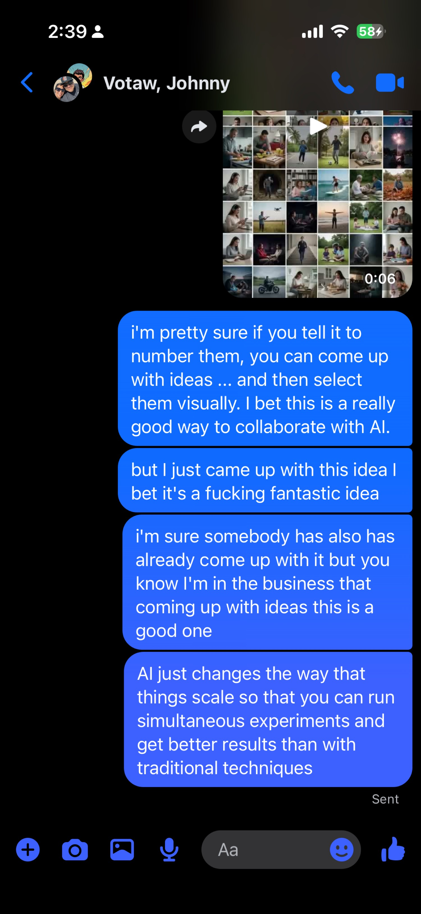
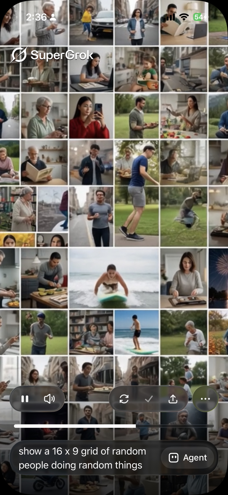

The Observation
When you sit at the top level of an AI interface and ask for options, the traditional path is text. You describe. The model answers in words. You refine in more words. The bottleneck is description.
A different path appeared in a short exchange. Number the candidates. Present them visually. Select by glance and number. The human brain is already optimized for dense visual input. The AI is already optimized for generating many variations in parallel. Put the two together and the interface becomes asymmetric on purpose.
High bandwidth into the human. Low bandwidth out. Steering becomes almost effortless.

The Demonstration
A single prompt produced a dense 16 by 9 grid of people doing ordinary things: cooking, surfing, reading, walking, talking on the phone, standing in parks. No elaborate description required after the initial request. The grid arrived as a field of options.
Once the options exist as images, the next step is trivial. Number the cells. Point. Say the number. Or just tap. The AI does not need a long prompt describing what you meant. You already saw it. You selected it. The data extraction cost collapses.

Why the Asymmetry Works
Human vision is a high-capacity channel. A glance takes in dozens of scenes, styles, poses, and contexts at once. Language is a low-capacity channel by comparison. Describing what you just saw in enough detail for an AI to regenerate it is expensive. Selecting the image you already saw is cheap.
AI generation is the opposite direction. It is cheap for the model to produce many parallel candidates. It is expensive (in human time) to evaluate them through text alone. The grid turns that cost structure into an advantage. The model floods the visual channel. The human samples and steers with almost no typing.
The result is a closed loop that favors exploration. You can run simultaneous experiments because the evaluation cost stays low. You can keep the interface simple because the selection method is already native to the brain.
Keep It Simple
The power of the pattern is that it does not require new hardware or complex interaction design. Number the options. Show them. Let the human point. That is the entire interface contract.
Everything else follows. More options become possible because evaluation is cheap. Better results become possible because more experiments fit into the same human attention budget. Collaboration with the model becomes a visual conversation instead of a descriptive one.
At the top level of the UI, when you are still exploring rather than refining a finished direction, this is the natural shape. Flood the high-bandwidth channel. Let the low-bandwidth channel only carry the selection.
Core Principle
Maximize the data the human brain can take in at a glance. Minimize the data the human must extract and type in order to steer. Visual grids do both at once. The asymmetry is the feature.
Local Context
Observed and demonstrated in the Tower District on August 1, 2026. The exchange and the generated grid were captured in real time. The reaction photograph is the unfiltered local response to seeing the pattern work.
Sources
- • iMessage exchange with Johnny Votaw describing numbered visual selection for AI collaboration, August 1 2026
- • SuperGrok generation of 16 × 9 grid of random people doing random things, same session
- • Personal demonstration and reaction photography, Tower District, Fresno
More stories from the High Tower District
View the archive